Results Overview
This page reports the experimental results of the yeast influenza-A biosensor project. It is organized by the four project modules, in the order of the yeast signalling pathway: chassis engineering, the signal recognition module, Gpa1 humanization, and reporter system construction.
The results reported below belong to the reporter system construction module; figures and captions follow the consolidated experimental results report.
Chassis Cell Engineering — Knockout of FAR1 and SST2
PAGER Antigen-Gated Fusion Receptor Protein Design
Humanized G-Protein Engineering — Gpa1-Gαq Chimera
Reporter Output Module: FUS1 Promoter Reporter System
Vector construction, transformation and positive-clone screening
To construct the S. cerevisiae fluorescent reporter system, the constructed yEGFP fluorescent expression vector was transformed into competent BY4741 cells using a S. cerevisiae transformation kit and screened on SD-His selective medium. As shown in Fig. 1, the negative-control transformation plate (A) showed no colonies, whereas only a few tiny, translucent single colonies appeared on the positive transformation plate (B), indicating that the yEGFP reporter plasmid had been successfully introduced and marker-positive transformants were obtained. Single positive colonies from Fig. 1B were then picked for colony PCR, and the gel electrophoresis (Fig. 1C) showed a correct band at 1152 bp for sample 2, consistent with the expected size, preliminarily confirming that the yEGFP reporter fragment had been correctly integrated into the yeast genome, with the positive clones requiring further sequencing verification.
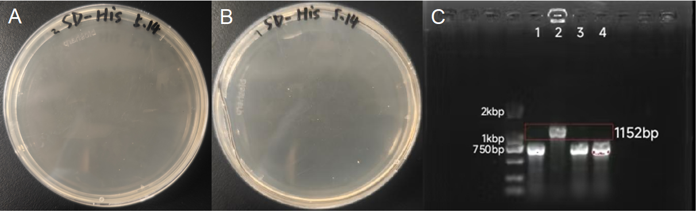
Sequencing verification of the reporter gene
The positive clones obtained above were sent for Sanger sequencing. Sequence alignment showed that the blue-highlighted central main body of the amplicon was completely identical to the P_FUS1+yEGFP reference sequence, with no point mutations or frameshifts introduced. Only minor differences were observed at the two ends, which resulted from the limited read length and reduced base-call quality toward the ends in that sequencing direction, and did not affect the reading frame or the integrity of the reporter coding sequence, confirming the sequence correctness of the constructed reporter system (Fig. 2).
Confocal fluorescence imaging under gradient α-factor induction
To verify the single-cell response of the reporter system to the mating pheromone α-factor, the strains were induced with gradient concentrations of α-factor and imaged by confocal laser scanning microscopy (Fig. 3). Panel A is the parental BY4741 strain without the fluorescent plasmid and panel B is the negative-clone control induced with 0 μM; both showed almost no green fluorescence. Panels C–I are positive clones induced with 0.375, 0.75, 1.5, 3, 6, 12 and 24 μM α-factor, respectively. As the α-factor concentration increased, the intracellular yEGFP green fluorescence gradually intensified and became more uniform, indicating that α-factor activates the downstream MAPK cascade via the Ste2 receptor and dose-dependently drives reporter-gene expression.
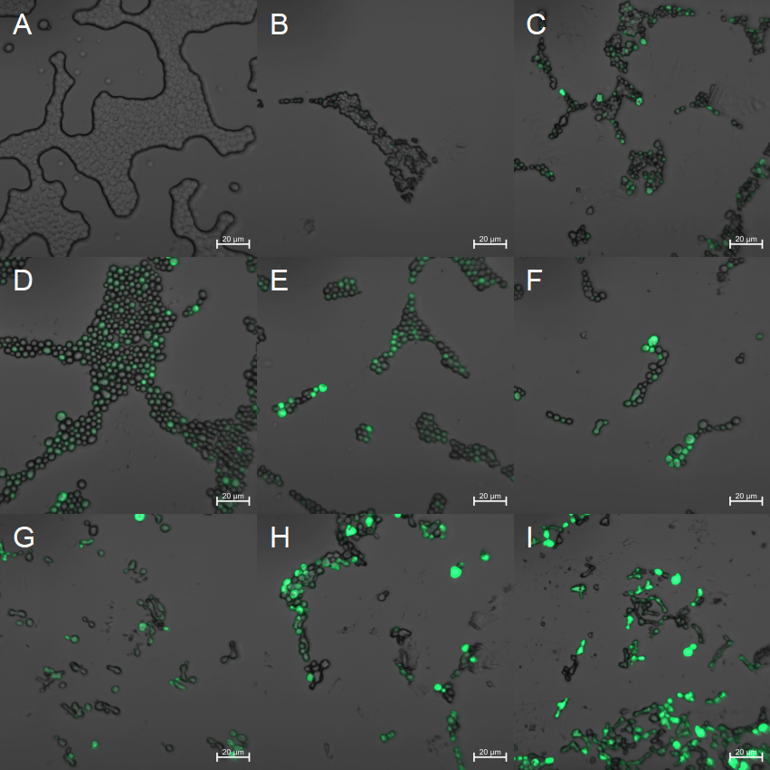
Effect of α-factor on yeast growth (OD600)
The effect of gradient α-factor concentrations on yeast growth was examined by monitoring OD600 growth curves (Fig. 4). The 0 μM control grew fastest and reached the highest final cell density, whereas both the growth rate and the final biomass decreased in a concentration-dependent manner as the α-factor concentration rose, with the high-concentration groups (6–24 μM) most strongly inhibited. These results reflect that α-factor induces G1-phase mating arrest and suppresses proliferation, confirming the biological activity of the pheromone signaling pathway.
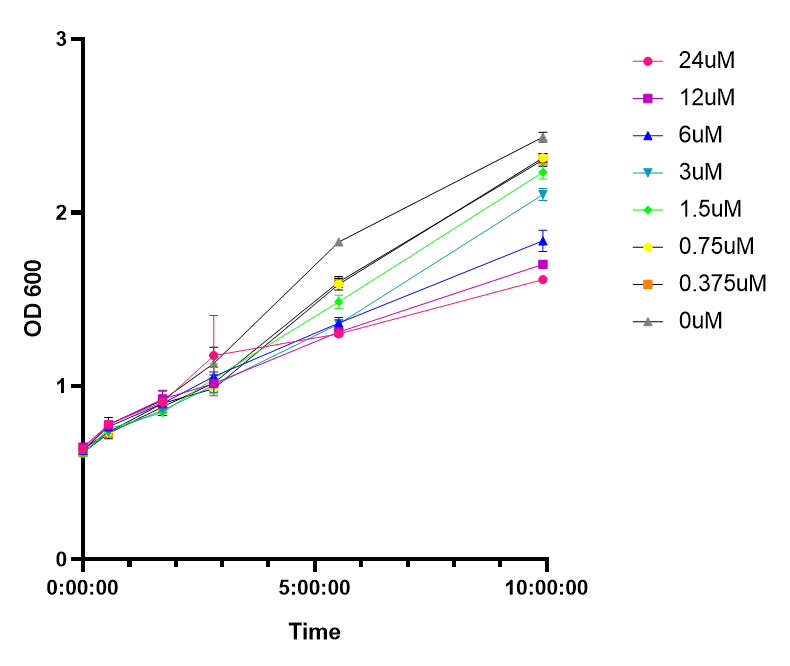
Time course of yEGFP fluorescence
The time-dependent change in yEGFP fluorescence under gradient α-factor induction was further measured (Fig. 5). Fig. 5A is the line plot of fluorescence intensity for each concentration over 1–16 h, and Fig. 5B is the bar chart over 1–23 h. At a given time point the relative fluorescence increased monotonically and gradually plateaued as the α-factor concentration rose, showing a clear dose-response relationship; at a given concentration the fluorescence increased with induction time and plateaued after about 10–16 h, indicating that the α-factor-induced fluorescent output depends on both time and concentration. The reporter system quantitatively converts α-factor signaling into a detectable fluorescent readout, providing the reporting platform for subsequent engineering and application of the yeast sensor.
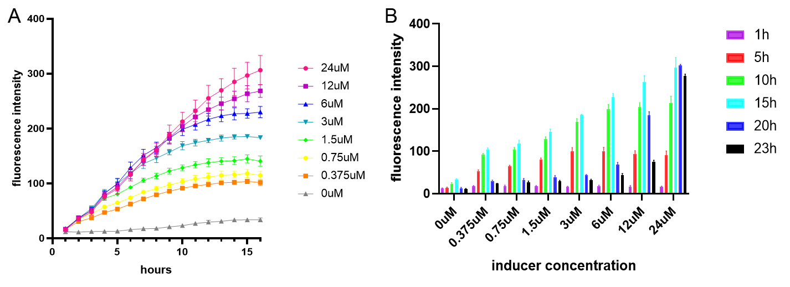
Early signal-to-noise ratio at different starting OD600
Building on the above, to further apply this fluorescent reporter system in constructing an influenza A virus biosensor that outputs a detectable fluorescent signal upon virus recognition, and considering that the time at which the virus appears is unpredictable in real-world detection, the system must yield a readable signal within an uncertain but short time window. We therefore examined how the starting cell density (initial OD600) affects the strength of the early post-induction signal (Fig. 6), with panels A and B measured under 12 μM and 1.2 μM α-factor induction, respectively. The SNR generally rose as the induction time increased from 1 h to 2 h and peaked over a moderate range of starting OD600.
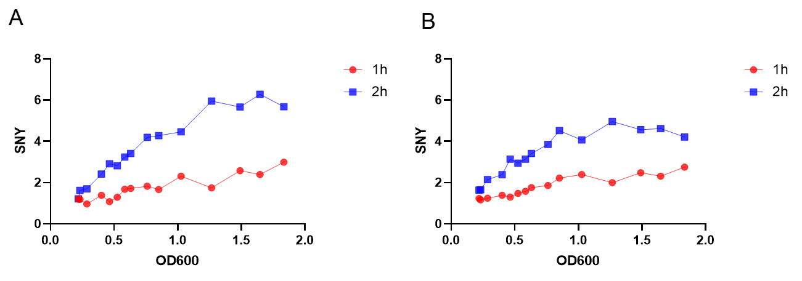
Construction and verification of the sgRNA knockout vectors
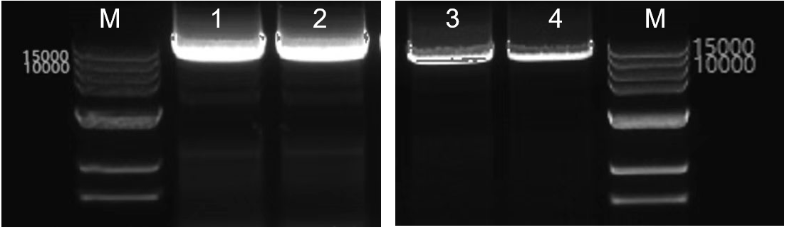
To construct CRISPR-Cas9 knockout vectors targeting Far1 and Sst2, a universal strategy was applied in which 20 bp guide sequences specific to each gene were introduced into the pML104 vector via primers, and the constructs were verified by plasmid PCR. As shown in Figure 7, agarose gel electrophoresis showed a clear, single band between 10000 bp and 15000 bp for both the pML104-Far1 and pML104-Sst2 constructs, consistent with the expected size of 11258 bp. Lanes 1–2 correspond to the plasmid PCR products of the pML104-Far1 construct, and lanes 3–4 correspond to those of the pML104-Sst2 construct, with no obvious non-specific bands or smearing. These results indicate that the guide sequences targeting Far1 and Sst2 were successfully cloned into pML104, and both knockout vectors were correctly constructed for subsequent yeast transformation and gene knockout experiments.
Amplification of the FAR1 and SST2 repair templates
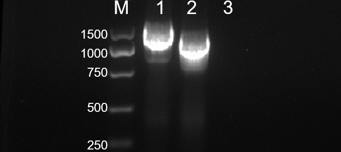
To construct repair templates for Far1 and Sst2 knockout, primers were designed to target the knockout sites, and the homology arms flanking each target site were amplified from BY4741 genomic DNA. The repair templates contain a 4 bp deletion relative to the original genomic sequence, which introduces a frameshift mutation after CRISPR-Cas9 cleavage via homologous recombination. As shown in Figure 8, agarose gel electrophoresis revealed a clear, single band between 1000 bp and 1500 bp in lane 1 (expected size, 1146 bp), a clear, single band between 750 bp and 1000 bp in lane 2 (expected size, 993 bp), and no band in the negative control (lane 3).. These results indicate that both the Far1 and Sst2 repair templates were successfully amplified and can be used for subsequent CRISPR-Cas9 co-transformation and gene knockout experiments.
Transformation and colony PCR verification
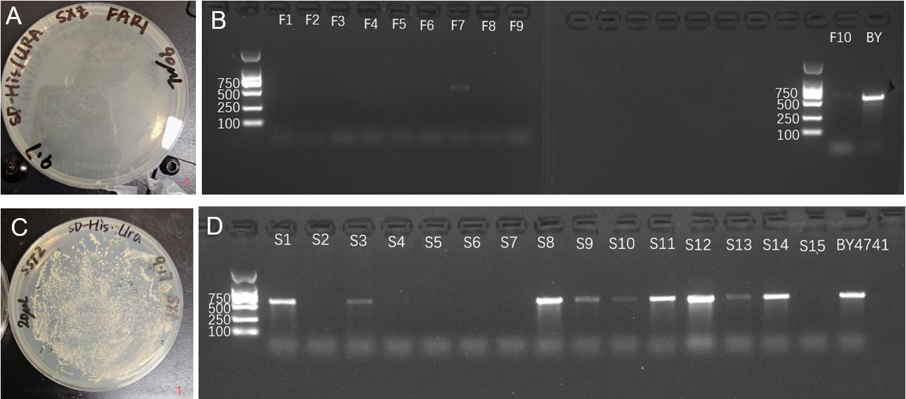
To obtain Far1 and Sst2 double-knockout strains, a stepwise knockout strategy was applied. First, the linearized pML104 plasmid and the Far1 repair template were co-transformed into BY4741 competent cells and plated on SD-His+URA selective medium, yielding single colonies (Figure 9A). Colony PCR was then performed for verification: because the Far1 verification primers were designed across the deleted 4-bp site, a 548-bp band was expected when the FAR1 locus remained unknocked out, whereas successful knockout abolished efficient primer binding and prevented amplification of the 548-bp product. Clones F1–F6, F8, and F9 did not produce the 548-bp band and were identified as positive clones (Figure 9B), confirming successful Far1 knockout. Using this Far1-knockout strain as the chassis, the Sst2 knockout vector and repair template were subsequently transformed, yielding transformants (Figure 9C). Colony PCR showed that clones S1, S5–S7, and S15 did not produce the 562-bp band and were identified as positive clones (Figure 9D), confirming successful Sst2 knockout. These results indicate that a Far1 single-knockout strain was successfully constructed, and Far1/Sst2 double-knockout strains were further obtained for subsequent functional validation.
Sanger sequencing confirmation of the knockouts
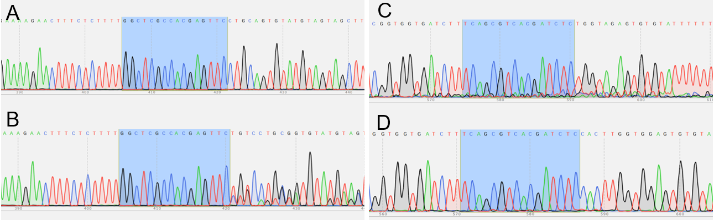
To confirm successful knockout of Far1 and Sst2, colony PCR-positive clones were subjected to Sanger sequencing, and the sequencing chromatograms of knockout clones were compared with those of non-knockout (wild-type) clones to identify the exact deletion site and deleted sequence. The successfully knocked-out Sst2 clone showed a 4 bp deletion (TGTC) at the target site (Figure 10A), while the non-knockout clone matched the wild-type sequence (Figure 10B), allowing clear identification of the deletion site. The successfully knocked-out Far1 clone showed a 4 bp deletion (CACT) at the target site (Figure 10C), while the non-knockout clone also matched the wild-type sequence (Figure 10D). These 4 bp deletions are expected to cause frameshift mutations and disrupt gene function. The sequencing results confirmed that Far1 and Sst2 knockout strains were successfully obtained.
Effect of knockout on growth
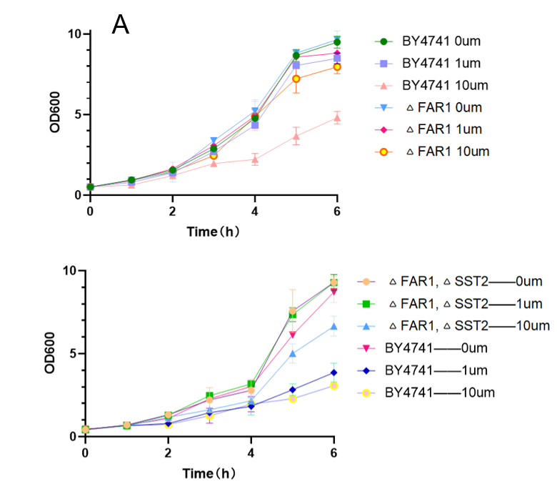
To verify whether Far1 and Sst2 knockout relieves α-factor-induced growth inhibition, growth curves were measured at different α-factor concentrations, with wild-type BY4741 as the control. Wild-type BY4741 showed obvious growth inhibition at 10 μM α-factor, whereas the Far1 knockout strain (ΔFar1) maintained a relatively high growth rate under the same condition (Figure 11A), indicating that Far1 knockout effectively relieved α-factor-induced G1 arrest. After further knocking out Sst2 in the Far1-knockout background, the double-knockout strain (ΔFar1 ΔSst2) showed no obvious growth inhibition at different α-factor concentrations compared with BY4741 (Figure 11B), suggesting that double knockout of Far1 and Sst2 further enhanced the strain's tolerance to α-factor.
Effect of knockout on α-factor-induced fluorescence
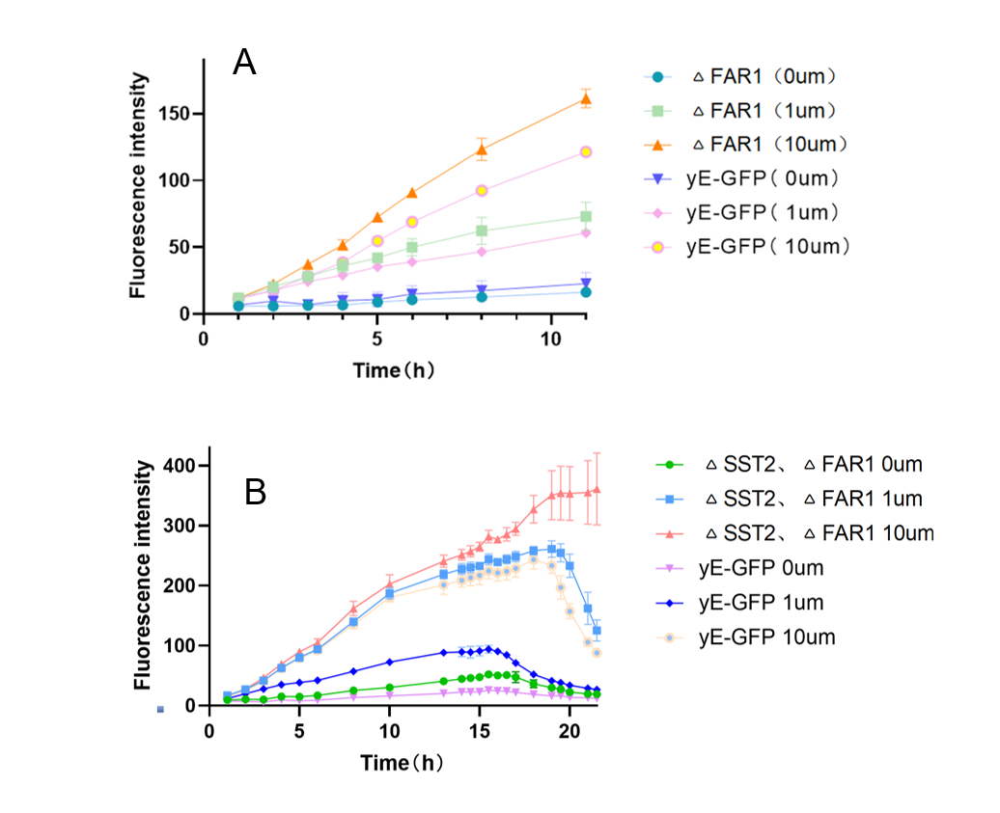
To verify the effect of Far1 and Sst2 knockout on downstream signaling, fluorescence intensity was measured at different α-factor concentrations. The Far1 knockout strain (ΔFar1) showed a slight increase in fluorescence with increasing α-factor concentration, but the overall enhancement was limited (Figure 12A). In contrast, the Far1/Sst2 double-knockout strain (ΔFar1 ΔSst2) exhibited a more pronounced signal enhancement (Figure 12B): at 1 μM α-factor, its fluorescence was already much higher than that of the yE-GFP control, indicating that the knockout lowered the response threshold and enabled strong signaling at low inducer concentrations; at 10 μM α-factor, the fluorescence of the double-knockout strain continued to rise until 22 h without reaching a peak, whereas the control peaked at around 18 h and then declined, suggesting enhanced response amplitude and impaired negative feedback regulation. These results indicate that double knockout of Far1 and Sst2 enhances the yeast fluorescence response to α-factor, characterized by higher sensitivity at low concentrations and a more sustained response at high concentrations, supporting its potential as a low-concentration signal-amplifying biosensor element.
Early signal-to-noise ratio at different starting OD600
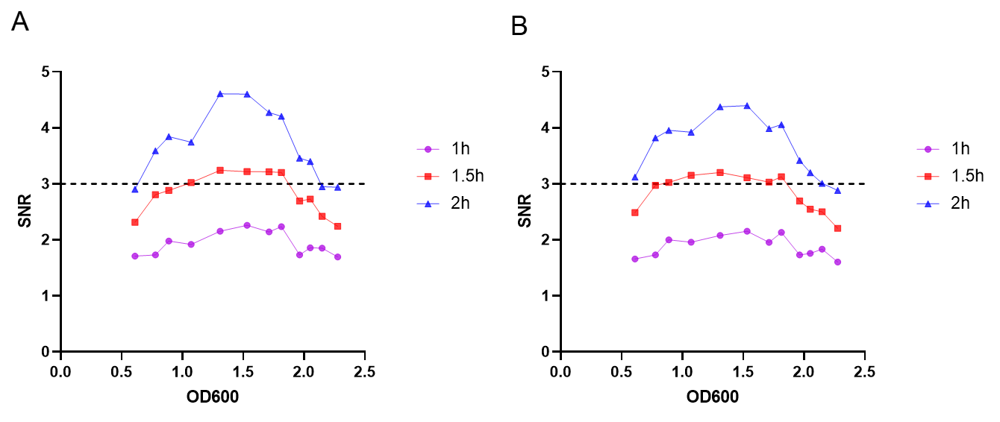
After knocking out the Far1 and Sst2 genes to amplify the fluorescent signal, a complete signal-to-noise ratio (SNR) assay at different starting OD was performed again (Fig. 13, with panels A and B measured under 12 μM and 1.2 μM α-factor induction, respectively). Using the background fluorescence of uninduced and negative-clone cells as the baseline, SNR ≥ 3 was defined as an evident signal. The results showed that the SNR generally reached 3 or above over an initial OD600 range of about 0.6–2.1, i.e., an evident signal appeared reliably within 2 h. Accordingly, in practical applications the initial OD600 can be set to about 0.6, which ensures a sensitive response to the virus signal within 2 h and, thanks to the growth and signal-retention capacity at this starting density, provides a continuous detection window of roughly 12 h before a new yeast sensor needs to be replaced, giving the operational basis for the practical detection deployment of the influenza A yeast sensor.
Construction of the homologous targeting template
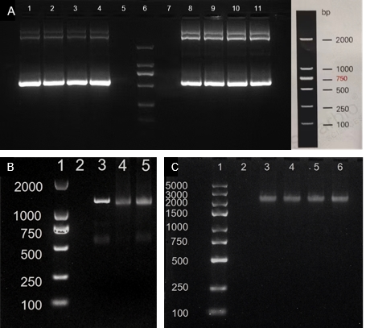
To realize humanization modification of yeast Gpa1 protein, we first amplified the GPA1 upstream homologous arm, downstream homologous arm and selection marker gene URA3 via PCR. Agarose gel electrophoresis (Figure 14A, 14B) showed that the bands of each amplified product matched the expected theoretical size with few non-specific bands, confirming successful amplification of homologous arms and marker gene. Overlap-extension fusion PCR was then performed to assemble the three fragments into a complete homologous targeting template. The electrophoresis result of fusion PCR products (Figure 12C) exhibited specific bands consistent with the target length, while no amplification band was observed in the negative control group. These results verified the successful construction of the homologous recombination targeting template, providing qualified DNA materials for subsequent gene editing of yeast chassis to achieve Gpa1 humanization.
Yeast transformation and positive-clone validation
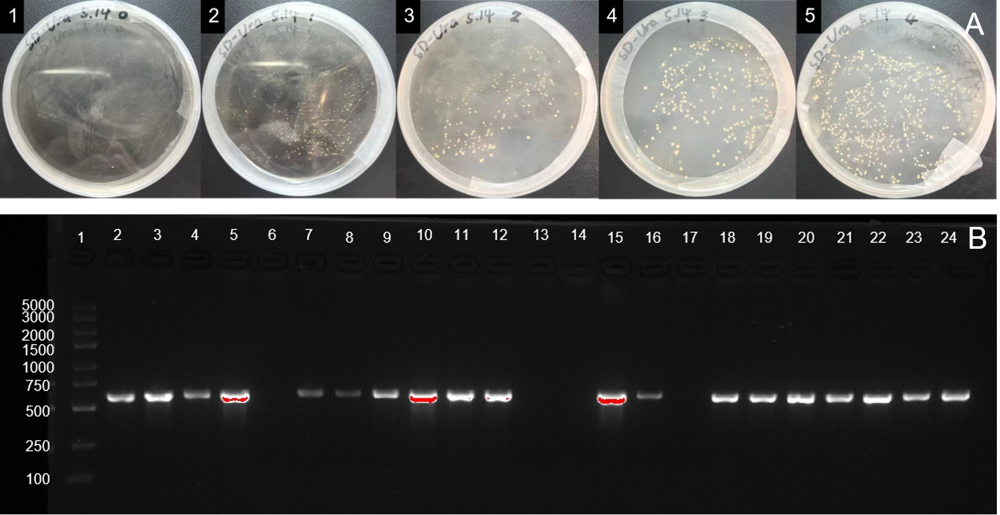
The assembled homologous targeting fragment for Gpa1 humanization was transformed into competent Saccharomyces cerevisiae BY4741 cells, which were spread onto SD-Ura selective plates. Colony growth (Figure 15A) showed single colonies on experimental plates while no colonies grew on the negative control plate, confirming valid transformation and selection. Single colonies were picked from qualified plates and verified by colony PCR for genomic integration. The electrophoresis result of colony PCR (Figure 15B) indicated that multiple colonies yielded amplicons of expected size. Positive yeast strains with Gpa1 humanization were preliminarily obtained, providing the engineered chassis for subsequent assembly and functional test of the yeast gated biosensor.
Sequence confirmation of the humanized locus
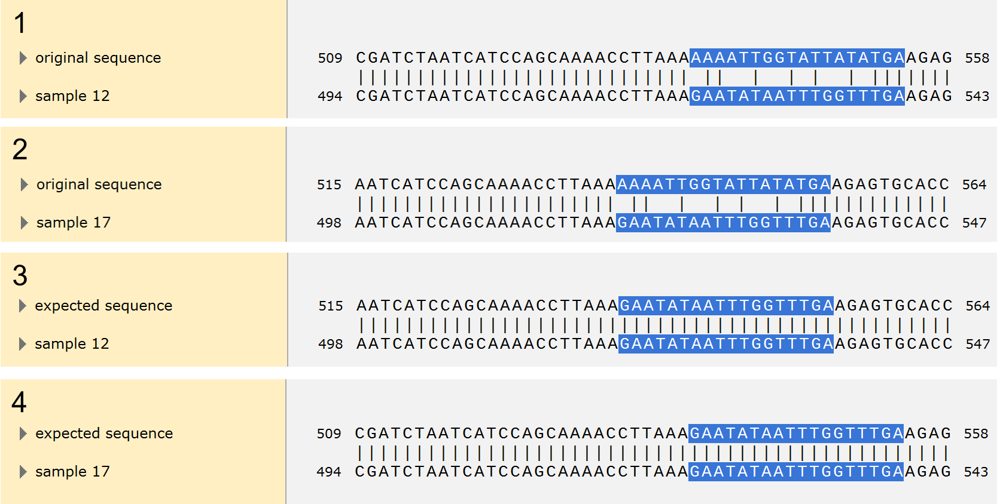
To further confirm site-specific genomic integration, candidate clones positive in colony PCR were selected for Sanger sequencing verification. Sequence alignment (Figure 16) showed obvious differences between Sample12, Sample17 and the original yeast GPA1 sequence. When aligned with the expected humanized sequence, both strains perfectly matched in the target replacement region. These results demonstrated successful homologous recombination. The endogenous yeast Gpa1 gene was site-specifically replaced as designed, and the Gpa1-humanized yeast chassis strain was successfully obtained.
Morphology after humanization
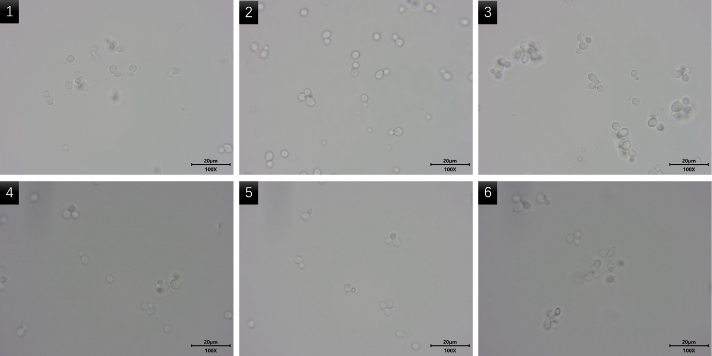
To verify the response of the MAPK pathway to α-factor after Gpa1 humanization, positive strains were induced with gradient concentrations of α-factor and observed under a microscope. After treatment with 0, 1 and 10 μM α-factor, no obvious shmoo protrusions were observed. This indicates that after humanization replacement of endogenous Gpa1, the native yeast G-protein-MAPK pathway shows drastically reduced response to the native ligand α-factor. This result confirms that our engineered chassis no longer responds to α-factor, eliminating background interference from the native mating pathway and making it suitable for our gated biosensor built upon heterologous receptors.
Growth of the humanized strains
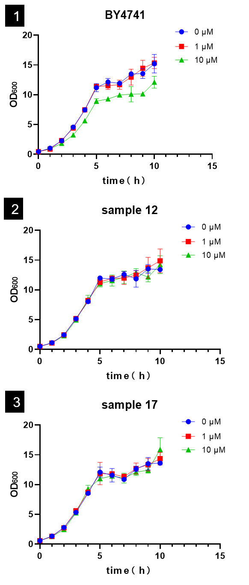
We measured the growth curves of wild-type BY4741 and Gpa1-humanized strains 12 and 17 under treatment with different concentrations of α-factor to evaluate the effects of humanization modification and α-factor stimulation on yeast proliferation. Wild-type BY4741 exhibited obvious growth inhibition under 10 μM α-factor. In contrast, for Gpa1-humanized strain 12 and strain 17, their growth profiles showed no significant difference between 0–10 μM α-factor groups and the untreated control. These results further demonstrate that Gpa1-humanized yeast loses the growth inhibitory response triggered by α-factor. Meanwhile, this gene editing modification does not significantly impair yeast proliferation, and the chassis maintains good growth performance, which is suitable for subsequent transformation of sensor plasmids and functional characterization.
Effect on the native α-factor fluorescence response
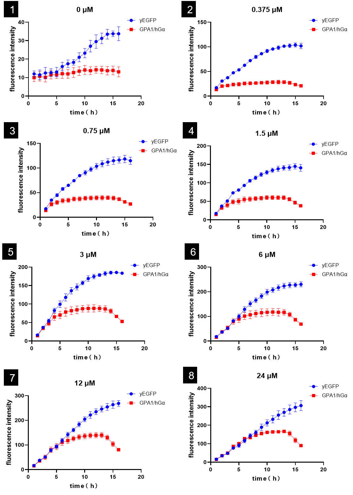
To quantitatively characterize the inhibitory effect of Gpa1 humanization on the native mating pathway, we transformed the FUS1-yEGFP reporter plasmid into wild-type BY4741 and humanized chassis respectively. Gradient concentrations of α-factor were applied for long-term induction, and fluorescence signals were continuously recorded. In wild-type strains, yEGFP fluorescence increased markedly with rising α-factor concentration, showing obvious dose-dependent activation. In contrast, the Gpa1-humanized strain maintained very low fluorescence across all α-factor concentrations, with almost no dose-dependent signal activation. This quantitative fluorescence result further confirms that the native yeast α-factor-MAPK pathway is substantially blocked after Gpa1 human replacement. The FUS1 promoter cannot be activated by α-factor, greatly reducing basal leakage of the biosensor and providing a low-background chassis for our heterologous receptor gated sensing circuit.
Discussion
The three parts reported above establish the foundational strains of the yeast influenza-A biosensor and characterize them independently.
Chassis. FAR1 and SST2 were knocked out and confirmed by sequencing (4 bp deletions TGTC for SST2, CACT for FAR1). The double-knockout strain relieves α-factor-induced growth arrest and, more importantly, lowers the response threshold and sustains the fluorescence signal at high α-factor concentrations, indicating amplified and prolonged signaling — a useful low-concentration signal-amplifying element.
Gpa1-humanized chassis. Site-specific replacement of the endogenous Gpa1 C-terminal residues was confirmed (Samples 12 and 17 matched the designed humanized sequence). After humanization, the native α-factor–MAPK response collapses across morphology, growth and downstream fluorescence, giving a low-background chassis whose FUS1 promoter can no longer be activated by α-factor.
Reporter system. The FUS1-yEGFP reporter was successfully constructed (1152 bp colony-PCR band; sequencing-confirmed) and shows α-factor-dose- and time-dependent yEGFP expression, while α-factor simultaneously suppresses proliferation in a concentration-dependent manner. It provides a quantitative fluorescent readout platform.
Taken together, the output (reporter) and the two interface layers (chassis and Gpa1 humanization) each have measured data. Each part retains its own α-factor concentration scheme (chassis: 0 / 1 / 10 μM; reporter and Gpa1: 8-step gradient), and values are presented within their respective schemes.